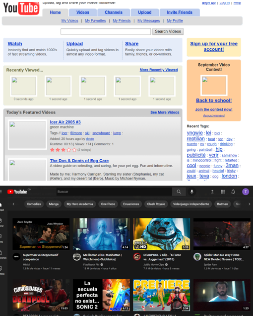

Pequeña introducción sobre la evolucion de la web
La sociedad actual esta increiblemente empapada de tecnologia por todos lados, en nuestros hogares, trabajos, escuelas y univesidades, practicamente esta en todo lugar y esto conlleva a que tengamos una convivencia de tiempo completo con ella.
Sin embargo muchas personas aun estan en desacuerdo con el progreso actual de la tecnologia, afirmando que solo se ha encargado de ddividir, aislar y controlar a los miembros de la sociedad, postura que, siendo sinceros, tiene un poco de verdad en lo que dice, sin embargo no todo lo que se a logrado con la tecnologia es un error, al contrario, ha beneficiado al mundo y ha dado vistasos de todo su potencial y las grandes cosas que se pueden llegar a lograr gracias a ella, pero ¿Qué garantiza que todo esto que acabo de decir es cierto?
Para esto escribo este comentario de ingenieria, con el fin de exponer mis puntos de vista de como es que la tecnologia, más especificamente para el escrito la web, a pasado de ser algo que se veia prometedor hace 20 o 30 años, a ser parte fundamental de la sociedad en la solución de problemas, la creacion de vinculos, la exploración de nuevos mundos, etc y tambien como es que puede influenciar y guiar el futuro de grandes objetivos que el mundo como sociedad desea cumplirbr

Para llegar a como podria mejorar el futuro de la sociedad por medio de la web, primero tenemos que dar un vistazo al pasado, a la evolucion de la web. La creacion de esta es atrivuida a Sir Tim Berners-Lee en el año 1991 el cual buscaba tener un lugar donde fuese capaz de estar almacenada mucha información al alcanse de todo el mundo, y de esa simple idea llegamos a día de hoy, don de practicamente cualqquier cosa que quieras hacer o sobre la que necesites saber algo, esta en la web, pero claro no todo nace de la noche a la mañana y para la web aplica, una pagina del 1995 no se va a ver igual a una de hoy en día,de hecho en el libro "web desining" de los FWA[1] podemos ver algunas de las paginas que existian en los primeros años de la web, y cuando las comparamos con las de hoy en día es más que obvio el nivel de mejora que existe, pero volviendo a la pregunta planteada anteriormente ¿Comó es que pudieron mejorar tanto? y ¿Comó puede servir eso en el futuro?.
Por cierto si no eres conciente de que tanto han cambiado las paginas web a lo largo de los años te dejo este link donde puedes buscar paginas web conocidas y ver por ti mismo como han evolucionado a lo largo de su existencia.